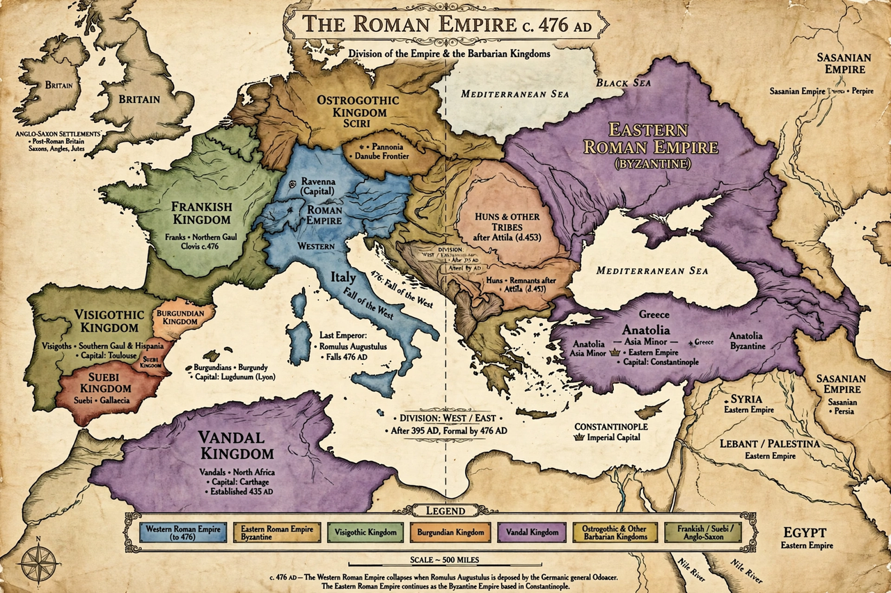

| Fall of the Western Roman Empire | |
|---|---|
| Date | 4 September 476 (deposition of Romulus Augustulus) |
| Location | Western Europe |
| Causes | Barbarian invasions, political instability, economic decline, military weakness |
| Result | End of the Western Roman Empire; emergence of barbarian kingdoms |

The fall of the Western Roman Empire, also called the fall of the Roman Empire or the fall of Rome, was the loss of central political control in the Western Roman Empire, a process in which the Empire failed to enforce its rule, and its vast territory was divided between several successor polities. The Roman Empire lost the strengths that had allowed it to exercise effective control over its Western provinces; modern historians posit factors including the effectiveness and numbers of the army, the health and numbers of the Roman population, the strength of the economy, the competence of the emperors, the internal struggles for power, the religious changes of the period, and the efficiency of the civil administration.
In 476, the Germanic barbarian king Odoacer deposed the last emperor of the Western Roman Empire in Italy, Romulus Augustulus, and the Senate sent the imperial insignia to the Eastern Emperor Zeno. The date is conventionally taken as the end of the Western Empire and of ancient history, though the Eastern (Byzantine) Empire survived for nearly another thousand years, falling to the Ottomans in 1453.
From Edward Gibon's blaming of Christianity and moral decay to modern explanations emphasising climate change, pandemic disease, fiscal crisis and the pressure of mass migrations during the Migration Period, historians have proposed hundreds of theories. Increasingly, scholars describe not a sudden collapse but a long transformation of the Roman world in late antiquity.
See also: Odoacer · Romulus Augustulus · Byzantine Empire · Migration Period